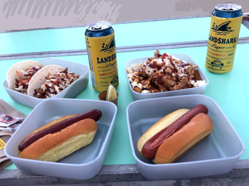

About
I started building websites for fun when I was around ten or so years old because the internet was new and weird at the time and so was I, I guess.
This site was created in November 2022 as an experiment and creative outlet. It has changed a lot over the years.
More recently I found a bunch of retro-style websites reminiscent of the 90s and wanted my creative outlet back.

This website is coded with love and mild frustration by Yours Truly using Visual Studio Code and GitHub. I make the graphics using Paint Shop Pro 7 and Gimp.
Inspiration for this site
| lazybones | If the basic layout to my site looks similar to lazybones, that's because it is. |
| kobrakid | Similarly, much of the layout and content ideas for my site came from here. |
| inkcaps | Beautifully curated graphics and whimsical content! I love it! |
| bitmapdreams | The most beautiful pixel art I've ever seen. |
| myrrh | Interestingly designed site with great links. |
Artwork


Kitchen
 Why I love locally farmed eggs
Why I love locally farmed eggs

- Variety of shapes and colors
- Extra-orange yolks!
- Knowing the chickens are living the good life
- Supporting a local business
Favorite food movies
- Green Book (2018). In addition to it being my favorite movie I've seen this year, I could not get enough of the insanely charming food scenes. I immediately needed to cook spaghetti with (vegetarian) meatballs after watching it.
- The Menu (2022). Not much to say other than this movie rules.
Recent recipe success
These cabbage rolls are delicious and adorable!

Cook book corner
I recently grabbed this from the library and tried the recipe known as Hearts of Palm: Beach Style from a vegan restaurant in Philly called Vedge. The dish could be described as a vegan take on a seafood soup. Very good!
Random food thoughts
- Drinking a glass of wine and cooking a meal might be my favorite combination of activities.
- I often like to eat foods that are not traditionally considered breakfast foods for breakfast, like pasta.
- When I moved from New Jersey to Pennsylvania I was teased for pronouncing 'coffee' like 'kaw-fee' and so I toned it down. I still pronounce 'chocolate' like 'chaw-klet' and refuse to change.
Favorite restaurants
Lucky's Last Chance (Manayunk)
Tria
Monk's Cafe
Standard Tap
Hilltown Tavern
Library
A shrine to literary animals
Kazak the Hound of Space
Kazak is a dog who appears in Kurt Vonnegut's The Sirens of Titan and Breakfast of Champions, probably as a different dog each time. There is also Kazakh the dog who appears in Galápagos and is also apparently a different dog, though I kind of thought of them all as the same dog in different universes.
Jiji
Jiji is a cat in Kiki's Delivery Service by Eiko Kadono, one of my favorite books of all time. Jiji can talk to Kiki, who is a half-witch. The two go on adventures together and learn about growing up and becoming independent.
Books read in 2023
Hallowe'en Party by Agatha Christie
So much fun! I think I imagined this would be tedious and weird because of its age, but how ageist of me. Supposedly this is not even one of Christie's best works but I adored it nonetheless and want to read more of hers. Honestly just so fun and funny! Nevermind that actually solving the mystery myself was probably impossible.
Just Ignore Him by Alan Davies
Interesting look into the childhood of a comedian I admire. I discovered Alan Davies while watching cable TV in London and warming up to shows like QI and Taskmaster. Shane and I have particularly fond memories of getting back to our flat at night--arms loaded with unfamiliar snacks from the grocery store down the street--and popping on the telly to wind down and absorb some culture. I somehow found out that Davies had a painful childhood and, being always attracted to sad comedians because I somehow relate to their desperate need for everyone to like them, I decided to read his memoir. I remember it being very sad and sometimes amusing.
Lock In by John Scalzi
I don't remember finishing this book because I hated it so much. Just not my style, I guess. The author tried very hard to sound snarky and it wasn't landing for me.
Kiki's Delivery Service by Eiko Kadono
Perfect, sweet, absolute gem of a book! I can't say enough how much I adored this little tale. I literally wanted to become a witch when I read this and within days watched the movie.
Tortilla Flat by John Steinbeck
Standard sad Steinbeck. But the imagery of the California countryside sticks with me, and the fact that I felt sorry for the main characters despite their flaws.
Covered with Night: A Story of Murder and Indigenous Justice in Early America by Nicole Eustace
History is not my strong suit but this was a really interesting look at the problematic relations between colonists and Native Americans. Completely different justice systems, all kinds of bias, corruption, etc. Very eye-opening. I didn't think I could hate colonialism more but here we are.
A Christmas Carol by Charles Dickens
Another surprise joy from what I expected to be a dusty old classic. I'd had a bad experience with Dickens after trying to read Great Expectations in high school with an English teacher who I despised. This was a much more pleasant experience and proves why it is such a classic.
Scraps
To do list
Finish the library
Add more artwork
Make an inspiration board
2024 goals
Travel without fear
Finish a large painting
2024 things I did
Got back into yoga
Sang too much karaoke

Currently reading
House of Leaves by Mark Z. Danielewski and loving the zany ~*~experience~*~.
You Look Like a Thing and I Love You by Janelle Shane and it's too early to share my thoughts.
Recently finished
Adventures of Huckleberry Finn by Mark Twain. It really got intense toward the end.
Travel memories
My friends and I traveled to Montreal in June and I've officially been converted from someone who didn't understand the hype around poutine to someone who cannot stop thinking about the delicious mushroom poutine I had from a food truck.

Nature corner